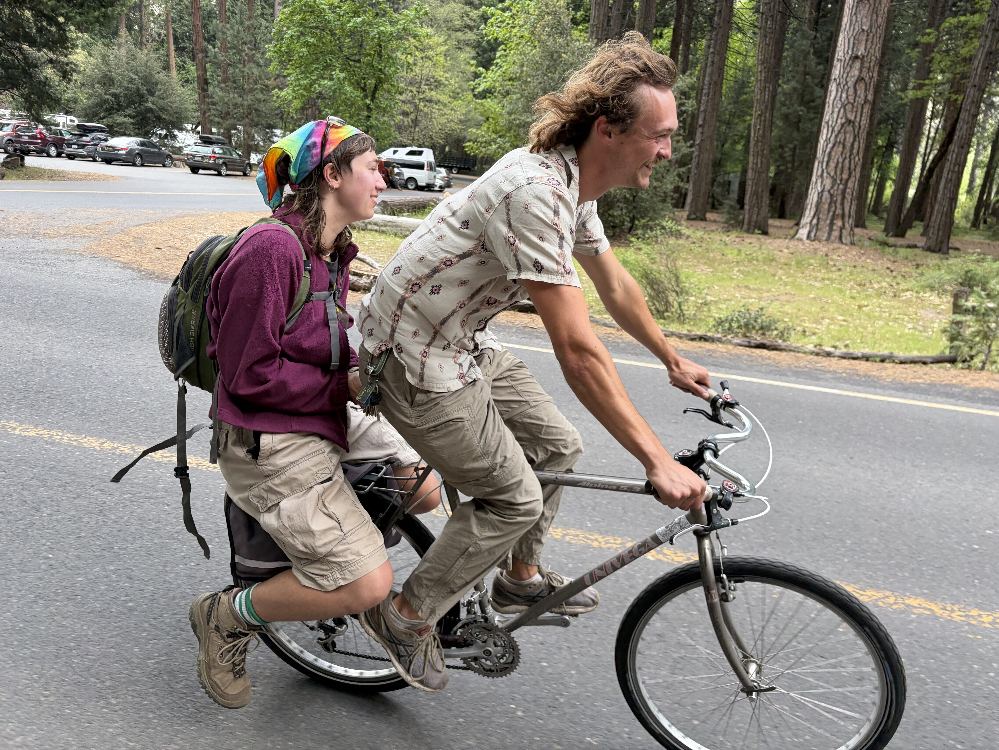
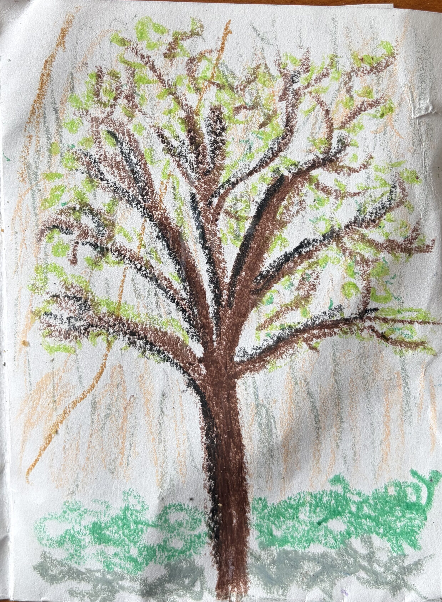
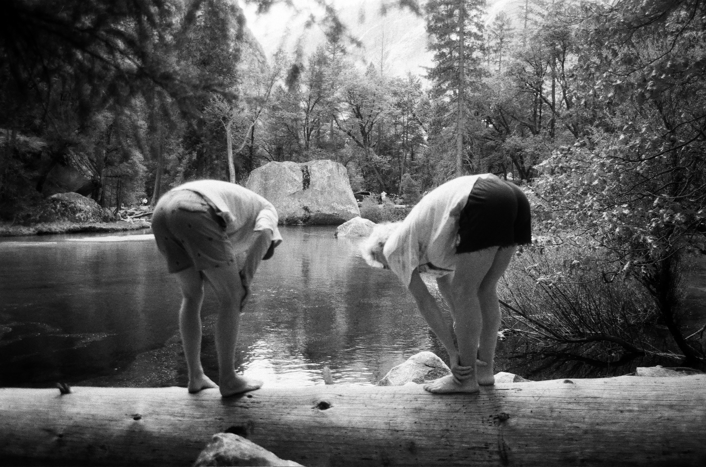
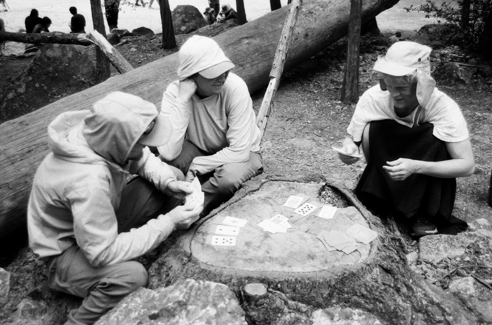
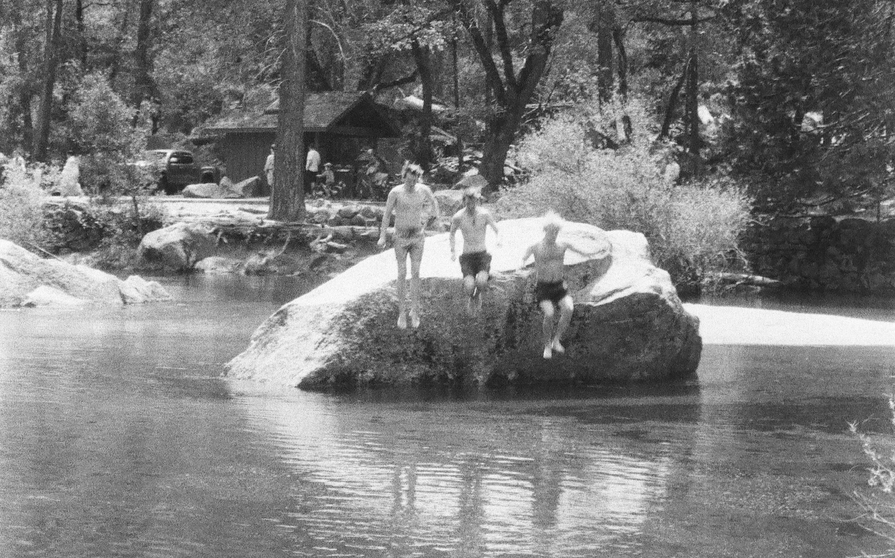

Yosemite 2026
a trip to Yosemite with friends from the Bike Nite group; my first time in Yosemite.
Thursday: Drive to Yosemite
Friday: Morning Waterfall, John Muir Trail


Saturday



SWOOPY VIDEO HERE
Saturday - Sunday
----- ascent -----
Both hikes here GPX
----- made it to the top -----
----- descent -----
Monday